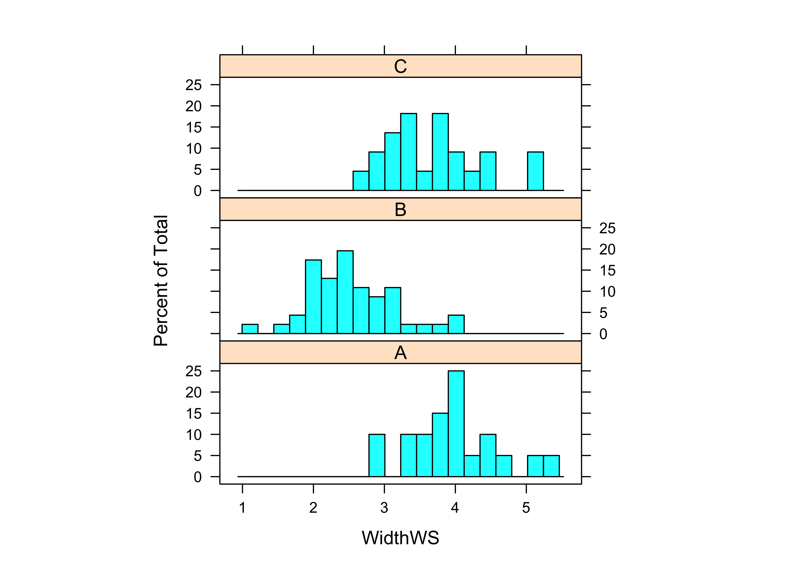
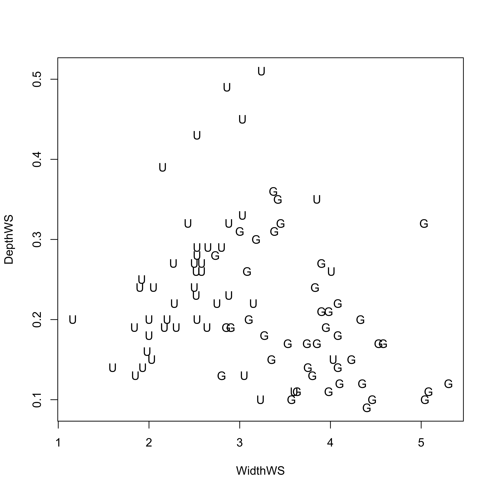
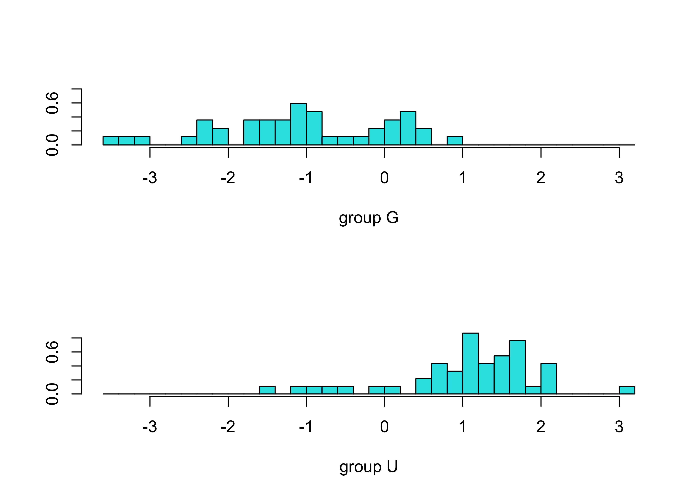
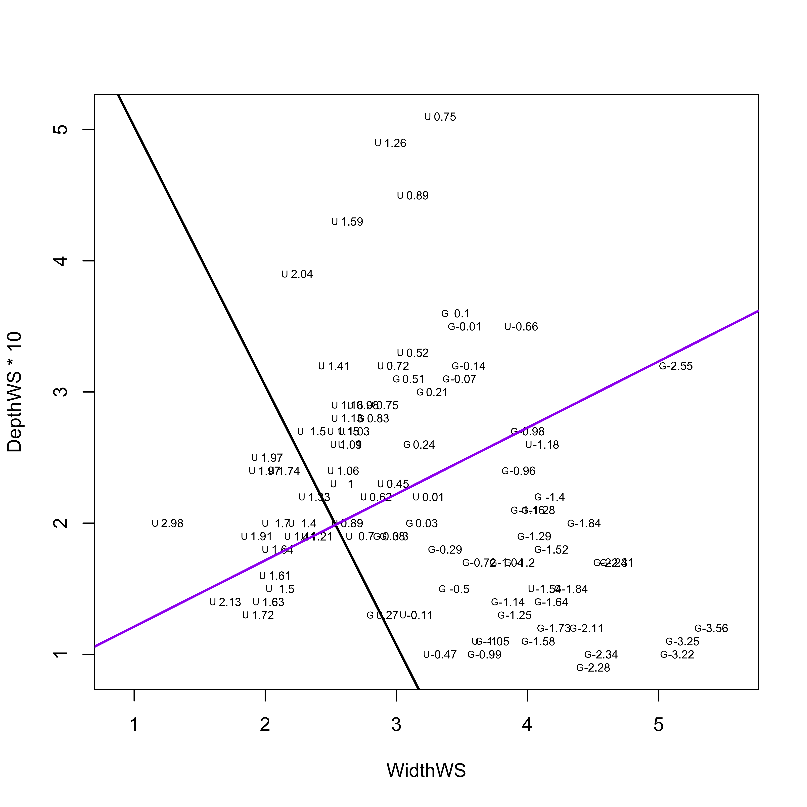
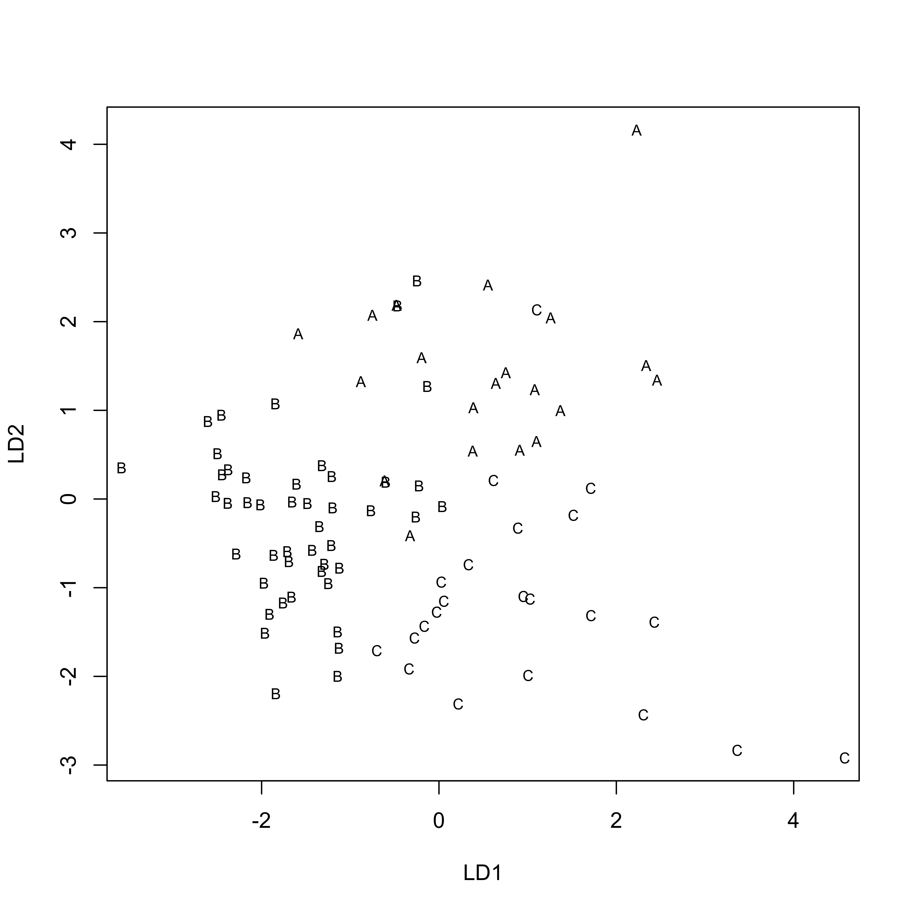
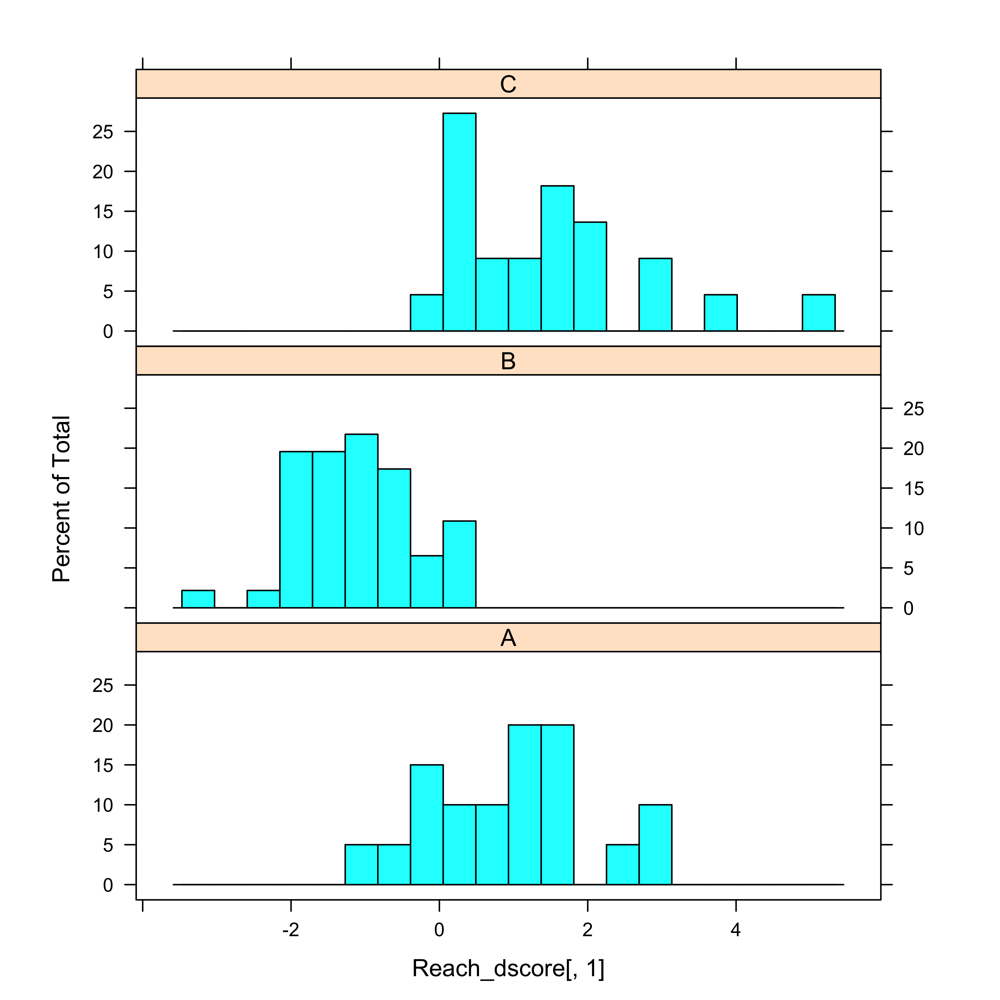
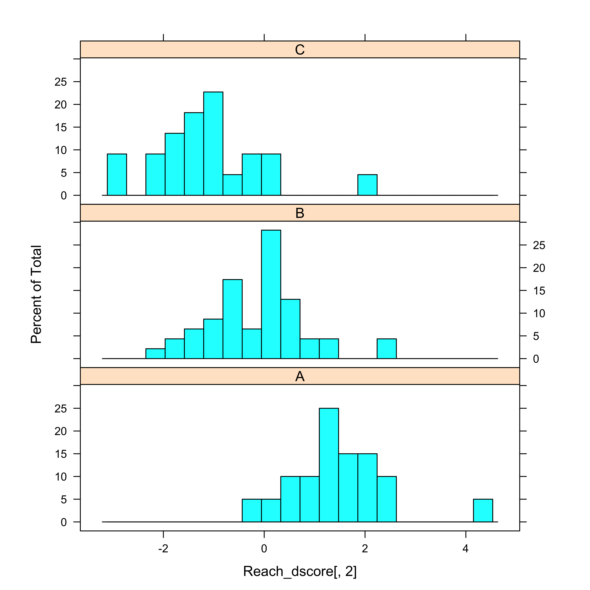
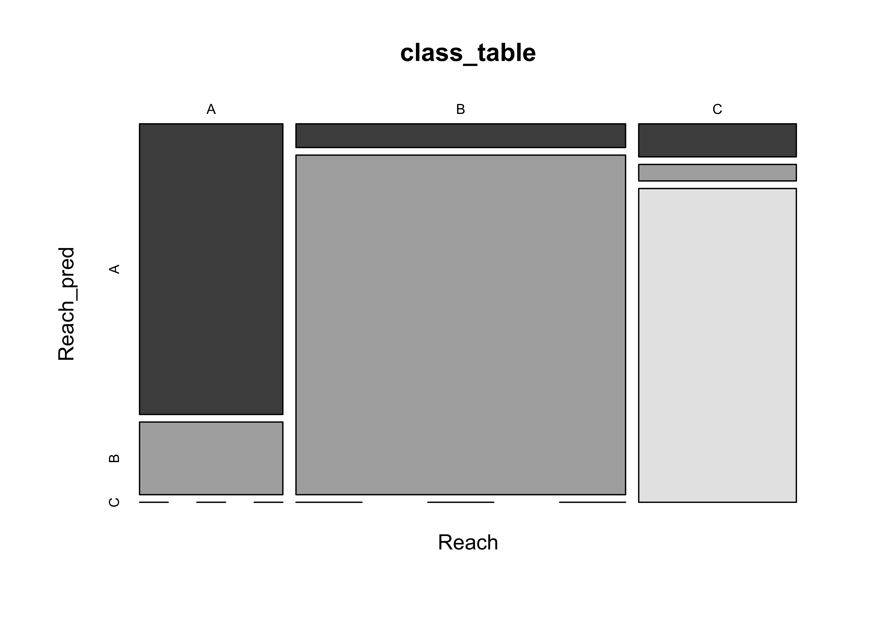

MANOVA and discriminant analysis
NOTE: This page has been revised for Winter 2021, but may undergo further edits.
1 Introduction
There are two related multivariate analysis methods, MANOVA and discriminant analysis that could be thought of as answering the questions, “Are these groups of observations different, and if how, how?” MANOVA is an extension of ANOVA, while one method of discriminant analysis is somewhat analogous to principal components analysis in that new variables are created that have certain desirable properties.
2 MANOVA
Multivariate analysis of variance, or MANOVA, like univariate analysis of variance is aimed at testing the null hypothesis that the means of groups of observations are identical. Rejection of this hypothesis is generally accompanied by the scientific conclusion that the groups of observations are indeed different, or were generated by some different process, or come from different underlying populations.
Illustration of the conceptual model:
The univariate analysis of variance situation [aov.gif]
The multivariate analysis of variance situation [manova.gif]
![[aov.gif]](https://pjbartlein.github.io/GeogDataAnalysis/images/aov.gif){kind=link}
![[manova.gif]](https://pjbartlein.github.io/GeogDataAnalysis/images/manova1.gif){kind=link}
2.1 ANOVA on individual variables
As an example of ANOVA, we can use the Summit Cr. data, testing the hypothesis that the mean values of some of the hydraulic geometry variables differ from reach to reach (or from HU to HU). First, we examine some univariate analyses of variance with a single grouping variable (Reach), which implements “one-way” analysis of variance.
Start by loading the lattice package and attaching the sumcr data frame.
# ANOVA and MANOVA
library(lattice)
attach(sumcr)Then, analysis of variances of individual variables can be conducted by setting a temporary variable (and its name) to one of the variables in the data frame:
# univariate analysis of variance
# set variable to analyze
varname <- "WidthWS"
# plot distributions by groups
histogram(~ eval(get(varname)) | Reach, nint=20, aspect=1/3, xlab=varname)
# test for homogeneity of group variances
tapply(get(varname), Reach, var)## A B C
## 0.3898621 0.3712255 0.4260874bartlett.test(get(varname) ~ Reach)##
## Bartlett test of homogeneity of variances
##
## data: get(varname) by Reach
## Bartlett's K-squared = 0.13578, df = 2, p-value = 0.9344# analysis of variance
sumcr_aov1 <- aov(get(varname) ~ Reach)
summary(sumcr_aov1)## Df Sum Sq Mean Sq F value Pr(>F)
## Reach 2 37.24 18.621 47.88 1.19e-14 ***
## Residuals 85 33.06 0.389
## ---
## Signif. codes: 0 '***' 0.001 '**' 0.01 '*' 0.05 '.' 0.1 ' ' 1In the above example (for WidthWS), first the variable was plotted by groups, then Bartlett’s homogeneity-of-variance test was run, and finally the one-way analysis of variance. In this example, Bartlett’s K-statistic was not so large (with a small p-value) to reject a null hypothesis of equal variances, while in contrast, the F-statistic was large enough to reject the null hypothesis of equality of group means.
Univariate analyses of variance for individual variables can be gotten simply by replacing the name assigned to varname and rerunning the block of code.
The main issue that arises in conducting some number of individual ANOVAs is the possibility that some analyses will appear significant, simply by chance.
2.2 MANOVA
MANOVA aims to answer the question of whether the groups differ, when all variables are considered jointly. The summary.aov() function displays the individual ANOVAs, but the examination of these is not a replacement for examining the individual ANOVAs in detail as above.
# MANOVA
Y <- cbind(DepthWS, WidthWS, WidthBF, HUAreaWS, HUAreaBF, wsgrad)
sumcr_mva1 <- manova(Y ~ Reach)
summary.aov(sumcr_mva1)## Response DepthWS :
## Df Sum Sq Mean Sq F value Pr(>F)
## Reach 2 0.08798 0.043990 5.9896 0.003685 **
## Residuals 85 0.62426 0.007344
## ---
## Signif. codes: 0 '***' 0.001 '**' 0.01 '*' 0.05 '.' 0.1 ' ' 1
##
## Response WidthWS :
## Df Sum Sq Mean Sq F value Pr(>F)
## Reach 2 37.242 18.6210 47.876 1.187e-14 ***
## Residuals 85 33.060 0.3889
## ---
## Signif. codes: 0 '***' 0.001 '**' 0.01 '*' 0.05 '.' 0.1 ' ' 1
##
## Response WidthBF :
## Df Sum Sq Mean Sq F value Pr(>F)
## Reach 2 335.35 167.67 46.574 2.199e-14 ***
## Residuals 85 306.02 3.60
## ---
## Signif. codes: 0 '***' 0.001 '**' 0.01 '*' 0.05 '.' 0.1 ' ' 1
##
## Response HUAreaWS :
## Df Sum Sq Mean Sq F value Pr(>F)
## Reach 2 8764 4382.0 13.225 9.99e-06 ***
## Residuals 85 28165 331.4
## ---
## Signif. codes: 0 '***' 0.001 '**' 0.01 '*' 0.05 '.' 0.1 ' ' 1
##
## Response HUAreaBF :
## Df Sum Sq Mean Sq F value Pr(>F)
## Reach 2 55349 27674.3 10.497 8.432e-05 ***
## Residuals 85 224099 2636.5
## ---
## Signif. codes: 0 '***' 0.001 '**' 0.01 '*' 0.05 '.' 0.1 ' ' 1
##
## Response wsgrad :
## Df Sum Sq Mean Sq F value Pr(>F)
## Reach 2 0.0000642 0.00003208 0.0947 0.9098
## Residuals 85 0.0288014 0.00033884summary(sumcr_mva1, test="Wilks")## Df Wilks approx F num Df den Df Pr(>F)
## Reach 2 0.22264 14.925 12 160 < 2.2e-16 ***
## Residuals 85
## ---
## Signif. codes: 0 '***' 0.001 '**' 0.01 '*' 0.05 '.' 0.1 ' ' 1Note that manova() shows the individual ANOVAs, along with the Wilk’s Λ and associated F statistic at the bottom of the output.
Here, the F-statistic is large enough (with a correspondingly small p-value) to reject the null hypothesis of equality of group means.
3 Discriminant Analysis
Discriminant analysis has several interrelated objectives that include:
- identification of how one or more groups of observations differ as described by one or more, usually several, interrelated variables
- identification of which variables best distinguish among the different groups
- assignment or classification of new observations to one or another of the groups based on the values of the variables
In short, the analysis can be thought of as answering the related questions: Are the groups of observations different, and if so, how are they different?
Illustration of the conceptual model
- The discriminant analysis situation: [discrim1.gif]
![[discrim1.gif]](https://pjbartlein.github.io/GeogDataAnalysis/images/discrim1.gif){kind=link}
Details and examples
As an example of discriminant analysis, following up on the MANOVA of the Summit Cr. data, we can investigate how the reaches differ from one another, or in other words, we can identify the variables that best illustrate the difference among the reaches.
3.1 First example – two variables and two groups (grazed (Reaches A and C), and ungrazed (Reach B))
Here, the three reaches are recoded into two, grazed (G, reaches A and C) and ungrazed (U, reach B)
# discriminant analysis example, Summit Cr. data, two variables, two groups
library(MASS)
library(lattice) # for plots
attach(sumcr)Recode the Reach variable (which has the values A, B and C) first to integer values (1 to 3) using the as.integer() function, then convert the 3’s to 1’s, and then create a factor (using the as.factor() function) with the values “G” and “U” (grazed and ungrazed, assigned using the levels() function).
The labelled scatter plot displays a distinct separation in a space defined by WidthWS and DepthWS of the grazed G and ungrazed U reaches (with ungrazed reaches tending to be deep and narrow, and grazed reaches wide and shallow).
# recode Reach into two levels, Grazed and Ungrazed
Grazed <- as.integer(Reach)
Grazed[Grazed==3] <- 1
Grazed <- as.factor(Grazed)
levels(Grazed) <- c("G","U")
plot(WidthWS, DepthWS, type="n")
text(WidthWS, DepthWS, label=as.character(Grazed))
Now compute the discriminant function (using the lda() function from the MASS package). Discriminant “loadings” (correlations between the new discriminant functions and the original variables) are found simply with the cor() function, and the discriminant function scores for each observation are plotted using the lattice() function.
# discriminant analysis, coefficients and scores
Grazed_lda1 <- lda(Grazed ~ WidthWS + DepthWS, method="moment")
Grazed_lda1## Call:
## lda(Grazed ~ WidthWS + DepthWS, method = "moment")
##
## Prior probabilities of groups:
## G U
## 0.4772727 0.5227273
##
## Group means:
## WidthWS DepthWS
## G 3.832381 0.1919048
## U 2.544783 0.2471739
##
## Coefficients of linear discriminants:
## LD1
## WidthWS -1.520426
## DepthWS 3.005817plot(Grazed_lda1)
Grazed_dscore <- predict(Grazed_lda1, dimen=1)$x
cor(cbind(WidthWS, DepthWS, Grazed_dscore))## WidthWS DepthWS LD1
## WidthWS 1.0000000 -0.2485592 -0.9835497
## DepthWS -0.2485592 1.0000000 0.4194393
## LD1 -0.9835497 0.4194393 1.0000000histogram(~ Grazed_dscore[,1] | Grazed, nint=20, aspect=1/3)
The scatter plot, as well as the loadings show that WidthWS is the more important variable for “discriminating” the difference between the grazed and ungrazed observations.
The following code plots the discriminant function on the scatter plot.
# plot discriminant function and classification line
# to make plots easier to interpret, rescale DepthWS by 10x
plot(WidthWS, DepthWS*10, type="n", asp=1)
text(WidthWS, DepthWS*10, label=as.character(Grazed), cex=.5)
chw <- par()$cxy[1]
text(WidthWS+chw, DepthWS*10, label=as.character(round(Grazed_dscore,2)),
cex=.6)
# DF1
slope_DF1 <- Grazed_lda1$scaling[2]/Grazed_lda1$scaling[1]
abline(7, slope_DF1, lwd=2)
# classification threshold line
slope_CL1 <- -1/(Grazed_lda1$scaling[2]/Grazed_lda1$scaling[1])
int_CL1 <- ((Grazed_lda1$means[1,]%*%Grazed_lda1$scaling +
Grazed_lda1$means[2,]%*%Grazed_lda1$scaling)/2)*
(Grazed_lda1$scaling[1]/
Grazed_lda1$scaling[2]/Grazed_lda1$scaling[2])
abline(int_CL1, slope_CL1, col="purple", lwd=2)
The black line is the actual first discriminant function, along which the groups are maximally separated. The purple line is orthogonal to the discriminant function. Points whose WidthWS and DepthWS values plot above the line are likely to be ungrazed, while those below are more likely to be Grazed_
3.2 A second example
In this second example, all three reaches are considered, along with multiple variables. Two discriminant functions are generated.
# second example
# linear discriminant analysis
Reach_lda1 <- lda(Reach ~ DepthWS + WidthWS + WidthBF + HUAreaWS + HUAreaBF
+ wsgrad)
Reach_lda1## Call:
## lda(Reach ~ DepthWS + WidthWS + WidthBF + HUAreaWS + HUAreaBF +
## wsgrad)
##
## Prior probabilities of groups:
## A B C
## 0.2272727 0.5227273 0.2500000
##
## Group means:
## DepthWS WidthWS WidthBF HUAreaWS HUAreaBF wsgrad
## A 0.1685000 3.981000 8.55600 45.53150 99.52550 0.010342400
## B 0.2471739 2.544783 7.51087 22.60761 67.21109 0.008281087
## C 0.2131818 3.697273 12.23227 38.89227 126.72545 0.008359364
##
## Coefficients of linear discriminants:
## LD1 LD2
## DepthWS -1.5960568226 -6.14679814
## WidthWS 1.0312296747 0.47065068
## WidthBF 0.2400660338 -0.35057968
## HUAreaWS 0.0081615155 0.06138071
## HUAreaBF 0.0009023586 -0.01804585
## wsgrad 3.3522389867 -1.92537039
##
## Proportion of trace:
## LD1 LD2
## 0.6295 0.3705plot(Reach_lda1, asp=1)
Reach_dscore <- predict(Reach_lda1, dimen=2)$x
histogram(~Reach_dscore[,1] | Reach, nint=20, aspect=1/3)
histogram(~Reach_dscore[,2] | Reach, nint=20, aspect=1/3)
cor(sumcr[6:11],Reach_dscore)## LD1 LD2
## DepthWS -0.36415064 -0.31480457
## WidthWS 0.90773016 0.31055407
## WidthBF 0.79532537 -0.57254687
## HUAreaWS 0.59085011 0.26264931
## HUAreaBF 0.56288330 -0.15742478
## wsgrad 0.02941063 0.06116015The Coefficients of linear discriminants provide the equation for the discriminant functions, while the correlations aid in the interpretation of functions (e.g. which variables they’re correlated with).
The mosicplot() function compares the true group membership, with that predicted by the discriminant functions. The large boxes along the diagonal of the mosaicplot show the the discriminant functions provide useful information for distinguishing among the groups.
Reach_pred <- predict(Reach_lda1, dimen=2)$class
class_table <- table(Reach, Reach_pred)
mosaicplot(class_table, color=T)
4 Readings
- Ch. 14 in Zuur et al. (2007) Analysing Ecological Data, Springer. (Search the UO Library catalog for the Bivand et al. book (as in lecture 7), then search for “Analysing Ecological Data” in the Springer Link search field.)
- Chapter 25, Multivariate Statistics, in Crawley, M.J. (2013) The R Book, Wiley. To get to the book, visit http://library.uoregon.edu, login, and search for the 2013 edition of the book. Here’s a direct link, once you’re logged on: http://onlinelibrary.wiley.com/book/10.1002/9781118448908
- Maindonald (Using R…), Ch. 6